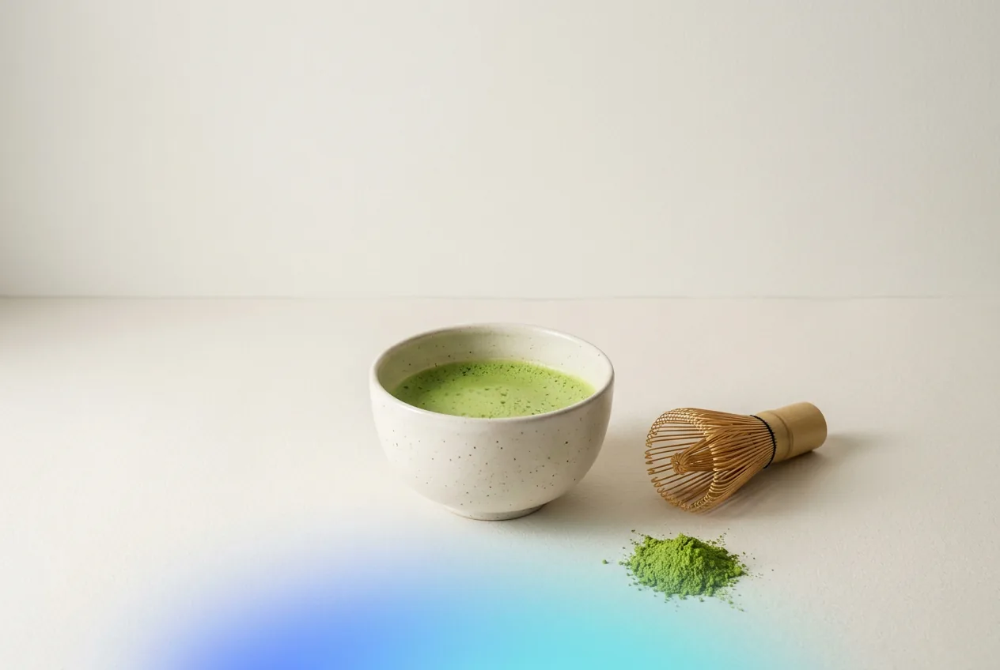

Mañana · 8 dic
Cómo se hace el té matcha paso a paso

Artículo en preparación
Este artículo forma parte del calendario editorial de noviembre y diciembre. Mientras tanto, puedes leer nuestro artículo sobre el té verde o descubrir qué blend encaja con tu día.